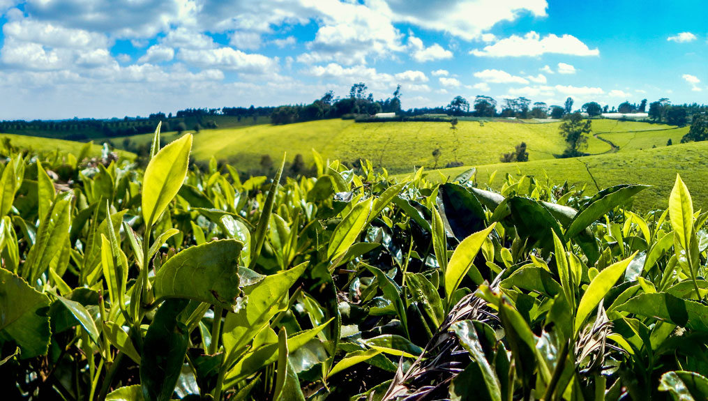
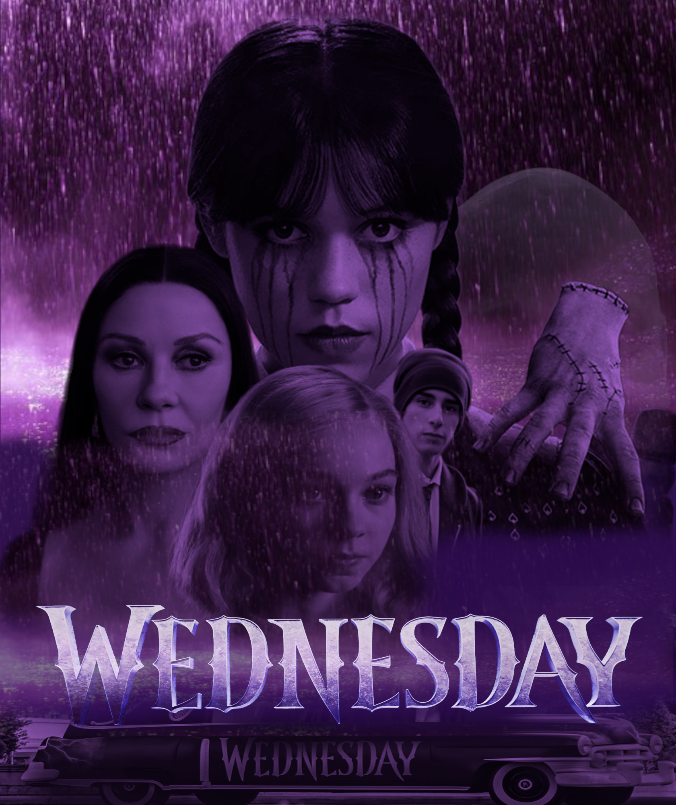
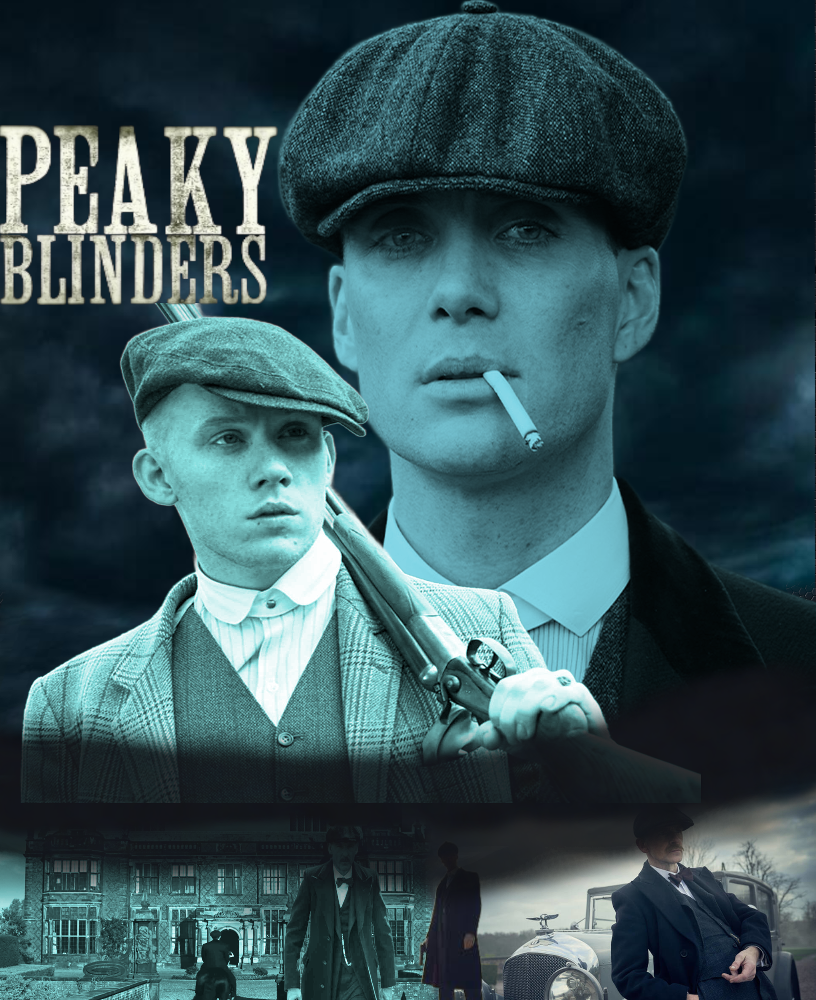

Welcome to Nickson
Explore articles, insights, media, and design work across all categories.
Latest Articles
Read the newest updates on Politics, Economics, and Health.
Creative Portfolio
Check out Graphic Design, Motion Graphics, and Video Edits under My Design.

AGRICULTURE & ENVIRONMENTTHE VALUE OF KENYA TEA
Tea is an evergreen shrub that drives Kenya's agricultural economy, with over 585,000 metric tonnes produced annually. Click below to read the complete research article.
Graphic Design
Branding, posters, and digital graphics.



Motion Graphics
2D/3D animations and visual effects.
Video Edits
Professional video production and color grading.
Add your video projects or YouTube links here.
Script Written
Engaging storytelling for commercials and films.
Add your written scripts or article text here.
Section Title
Content for this topic will be displayed here.